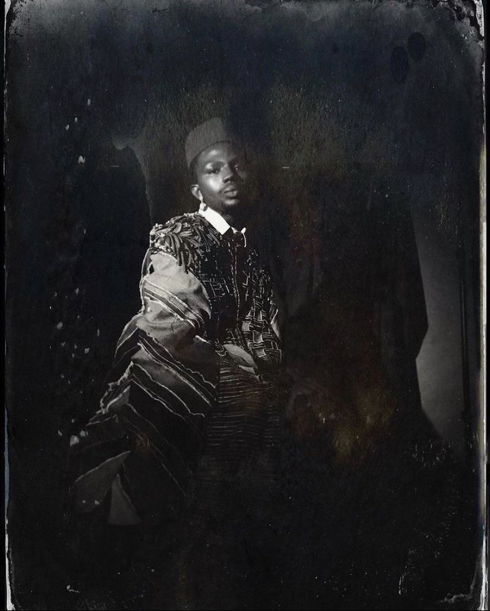

Only the contrived shrill of old ladies were audible in the still morning air. Mama’s cry was the loudest.
I wondered why she cried. Was she genuinely mourning for him, or were these tears of relief?
The sjambok still hung on the door, that symbol of sovereignty that we all knew and had profound respect for.
Every time Baba held it; we knew the time for castigation had come. And he would use it with grace and elegance,
like it was an extension of his arm. Our bodies, our minds!, had respect for it (even Bhoki, the house dog had had his dance with the devil,
and he knew that when Baba had rested, he too would rest) So I wondered why Mama was crying.
I still stare at the picture, the one they enlarged and placed next to his white coffin. The colors have faded, like happy memories,
and only the black and white remain, a sorrowful sepia. I stare at it because of what he wore that day; the Igbo market hat from his trip to Nigeria,
the kente robe from some past business conference in Accra and the white starched shirt from his vacation in Gabon. I think he knew,
that after he died, his five secret wives would come to claim his estate, and divide it, and leave us destitute.
Perhaps that is why in the picture, he wore best of all, his proud and victorious look.